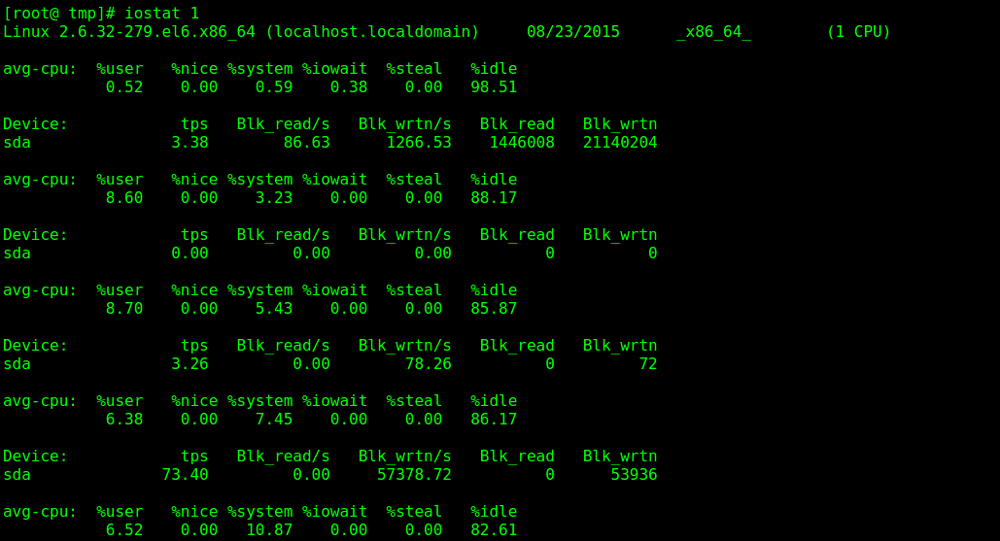
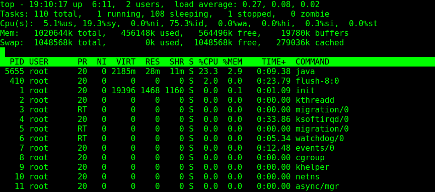
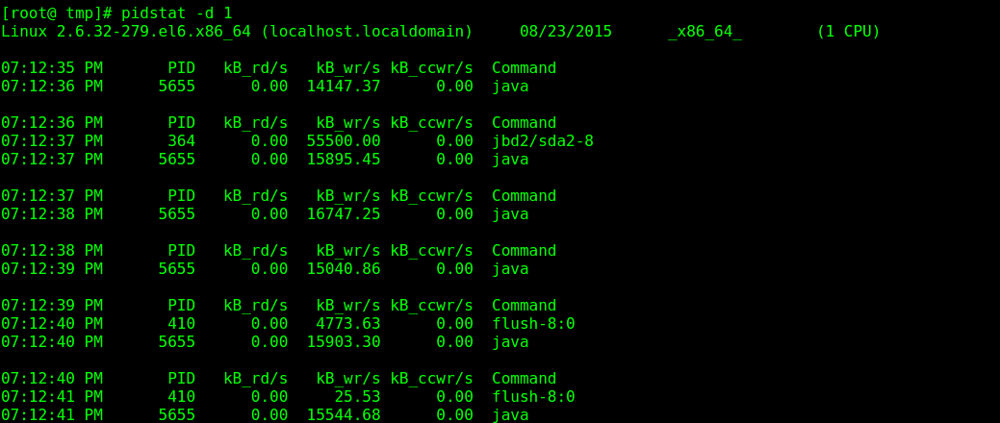
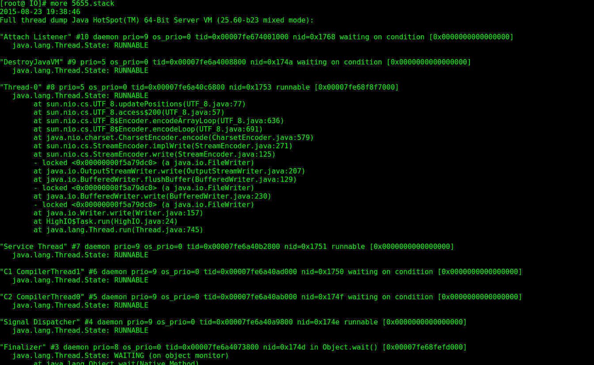

HELLO,
MY NAME IS XuJianGuo AND THIS IS MY BLOG
找到IO消耗大的Java程序，并分析之
IO消耗大的程序
import java.io.BufferedWriter;
import java.io.File;
import java.io.FileWriter;
import java.util.Random;
public class HighIO {
private String fileName = "/tmp/io.log";
private static int threadCount = Runtime.getRuntime().availableProcessors();
private Random random = new Random();
private class Task implements Runnable {
@Override
public void run() {
while(true) {
try {
BufferedWriter writer = new BufferedWriter(new FileWriter(fileName, true));
StringBuilder str = new StringBuilder("---begin---");
String threadName = Thread.currentThread().getName();
for(int i = 0; i < 100; i++) {
str.append(threadName);
}
str.append("---end---");
str.append("\n");
writer.write(str.toString());
writer.close();
Thread.sleep(random.nextInt(10));
} catch(Exception e) {
e.printStackTrace();
}
}
}
}
private void run() throws Exception {
File file = new File(fileName);
file.createNewFile();
for(int i = 0; i < threadCount; i++) {
new Thread(new Task()).start();
}
}
public static void main(String[] args) throws Exception {
HighIO highIO = new HighIO();
highIO.run();
}
}
这个程序的思想就是根据当前运行有多少个主机就开启多少个线程，线程的执行任务是往文件中写入指定的内容，不间断，这样必然会消耗很多 CPU资源和产生很多IO消耗。
使用iostat命令查看当前系统的IO消耗
从这里的iowait看到，IO的消耗不是很多，等待的时间不长，但是我们从Blk_wrtn上面可以看到IO的write操作还是有挺多的，但是我们 在操作系统的时候明显发现系统是挺卡的，下面我们从其他发现去发现问题。
使用top命令查看cpu进程的资源消耗
从图中的进程列表中看到，5655这个java进程的cpu占用率很大，可以初步断定这个5655的进程有问题。
使用pidstat命令查看进程的IO具体消耗
从图中看到这个5655进程每次写入了14m左右的数据，可见IO的消耗很大
使用jps命令查看进程对应的Java程序
[root@ tmp]# jps
5655 HighIO
5694 Jps
没错，这个5655进程就是我们上面写的HighIO程序
使用jstack分析java程序的堆栈信息
将jstack分析的堆栈信息打印到5655.stack文件中
[root@ tmp]# jstack 5655 > 5655.stack
查看5655.stack文件的内容
从上面可以发现到我们的HighIO线程一直在write上工作，从这里我们看出HighIO线程因为过多的write操作导致CPU占用过多， IO消耗过大。